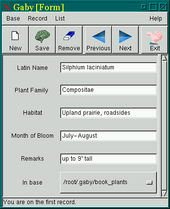
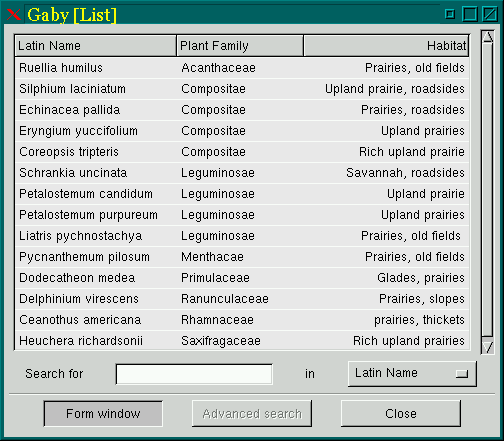

![[ TABLE OF CONTENTS ]](../gx/indexnew.gif)
![[ FRONT PAGE ]](../gx/homenew.gif)


Though many full-fledged SQL database systems exist for Linux, both commercial and Open Source, these large client-server applications are overkill for managing a single user's personal data. Personal information managers such as Lotus Organizer have long been popular with users of mainstream OS's, while Preston Brown's Korganizer (a QT-based Organizer clone) and Ical (a Tcl/Tk calendar application) are popular with many Linux users. These applications for the most part combine a PIM with calendar and scheduling features. In my case, I have little need for the calendar, etc., but I do have quite a bit of information which I would like to make more manageable. In keeping with the unix tradition of small, specialized tools designed for specific tasks, this article concerns two applications which can help a Linux user organize and make more accessible personal data.
Gaby, written by Frederic Peters, started as a simple address-book application written with the GTK toolkit. The name is an acronym, originally standing for Gaby Address Book of Yesterday; after further evolution of the program the author decided that the acronym could be generalized to Generic Astute Base of Yesterday. The further development was a result of the author's realization that he had created a simple database framework which could be used for other types of data. The "of yesterday" in the acronyms I take to be an acknowledgement that Gaby uses semicolon-delimited ASCII text as its data-storage format rather than the more complex, less portable, and often binary formats common in the big database systems. ASCII text as a data format has been around for quite a few years, but still can be useful for even quite large databases; see issue 34 of the Gazette for an article about NoSQL, which uses tab-delimited ASCII text as its format.
As installed, the executable gaby is symlinked to gbc. Invoking gbc starts up Gaby as a bookshelf organizer rather than as the default address-book. Gaby can display two different views of the user's data files, which are stored in the directory ~/.gaby.
In the most recent version of Gaby (0.2.3 as of late November of 1998) a user can create any sort of database with whatever fields are appropriate. This is a new, not completely implemented feature and the documentation is scanty at this point, so I'll present a quick overview of how it can be done.
Begin by creating a new empty directory called /etc/gaby. In this example I'm creating a database of prairie plants native to my area. In the Gaby source distribution is a sample template file named desc.gtest. Copy this file to etc/gaby, then rename it so that the suffix relates in a mnemonic fashion to the subject-matter of your trial database. In this example I renamed the file to desc.plants with the command mv desc.test desc.plants. Edit this desc.[whatever] file, changing the field names to reflect the nature of your data.
Next create a symbolic link in the /usr/local/bin directory (which is where Gaby is installed by default), linking gaby to plants (or whatever suffix you chose) with the command ln -s gaby plants. Now you can start Gaby by typing the name of your symlink and a customized Gaby window will appear with your new field names ready to be filled in.
The default view is the Form window, which shows the first entry in the
address or book data-file:

Any of the entries can be viewed in this window by means of the icons or menu-items, and new items can be added. In the menu-bar of this window is a List menu-item, which allows the user to sort the various items alphabetically according to any of the fields. Another menu-item provides the ability to export a list to either LaTeX or HTML tabular format.
The other window available is the List view, which is an overview or index
of all entries in the file:

Gaby is a good example of a free software project which is beginning to gain momentum as users begin contributing enhancements and providing feedback.. This naturally stimulates the developer to further augment the program. Gaby appeals to me because rather than being a fixed-function program, it can be extended by its users so that it can be used in ways not imagined by the author.
The current release of Gaby can be obtained from the Gaby web-site.
In issue 22 of the Gazette I reviewed an add-on mode for GNU Emacs called notes-mode. This useful editor extension was written by John Heidemann in an effort to bring order to his collections of academic notes. The core of this mode is a collection of Perl scripts, some of which are intended to be run automatically as a daily cron job (these index the files and establish internal links), while others time-stamp and initialize a new note.
While I was impressed at the time of my initial review with notes-mode's capabilities, I didn't succeed in making it work with XEmacs, which is my preferred editor. Recently John Heideman released version 1.16, which (thanks to contributions by Ramesh Govindan) now functions well with XEmacs. I've been using the mode extensively since then, and have found it to be useful beyond its intended purpose.
Notes-mode was developed to help organize academic notes, but it serves me well as an organizer for notes on various subjects. Every day a new file can be initialized including whatever user-defined categories are desired. The system allows easy keyboard navigation between the various days' category entries, and a temporary buffer can be summoned composed of all entries under a selected heading. The effect is similar to using links in a HTML file, with the advantage that entries are devoid of mark-up tags and don't require a browser for viewing. Another HTML-like feature is external file-linking. Using code adapted from Bill Perry's W3 Emacs web-browser, an entry such as file:///home/layers/xxx.txt can be selected with the mouse or a keystroke, causing the file to be loaded into the Emacs session. PGP encryption of individual entries is also supported (using the MailCrypt Emacs/PGP interface).
In a sense, Notes-mode is another sort of personal database optimized for subject- and date-based navigation. Its capabilities are orthogonal to those of Gaby. Notes-mode has the limitation of being fully useful only for users of Emacs or XEmacs, while Gaby can be run by anyone, though only in an X session. They both are ASCII-text based, ensuring that the data is fully portable and accessible by any editor or text-processing utility. Either or both of these programs can be invaluable to anyone needing to impose some order upon collections of information.
Version 1.16 of Notes-mode can be downloaded from this WWW site. Complete documentation is included with the archive in several formats.